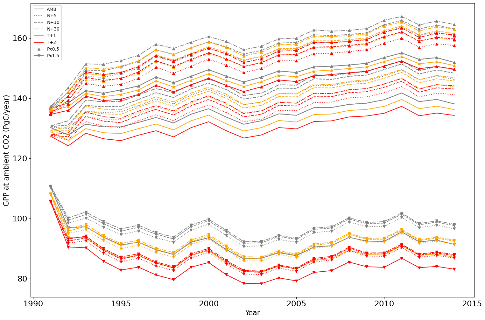
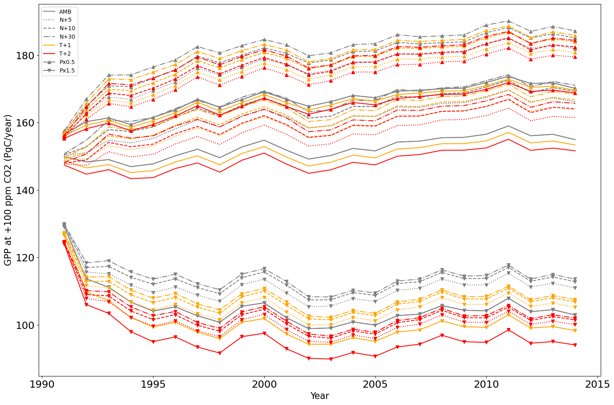
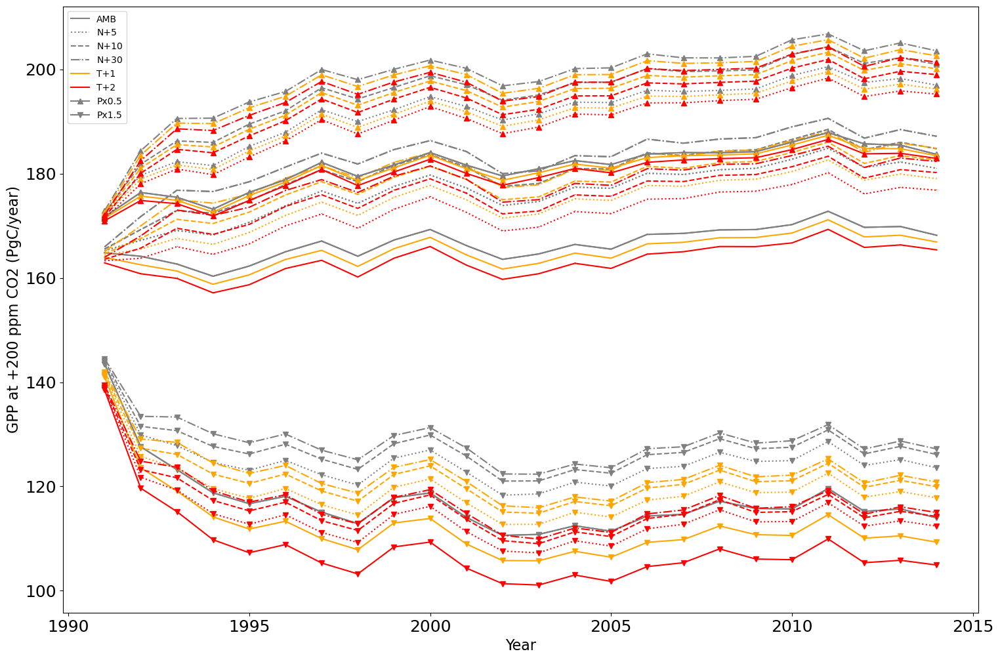

<!DOCTYPE html>
<html lang="en">
<head>
    <meta charset="utf-8" />
    <meta name="viewport" content="width=device-width, initial-scale=1.0, maximum-scale=1.0, user-scalable=no" />

    <title></title>
    <link rel="stylesheet" href="dist/reset.css">
    <link rel="stylesheet" href="dist/reveal.css" />
    <link rel="stylesheet" href="css/slides-extended.css" />
    <link rel="stylesheet" href="dist/theme/moon.css" id="theme" />
    <link rel="stylesheet" href="plugin/highlight/monokai.css" />
    <link rel="stylesheet" href="plugin/customcontrols/style.css">


    <link rel="stylesheet" href="css/mermaid.css" />

    <script defer src="dist/fontawesome/all.min.js"></script>

    <script type="text/javascript">
        function pageInIframe() {
            return (window.location !== window.parent.location);
        }

        let forgetPop = true;
        function onPopState(event) {
            if(forgetPop){
                forgetPop = false;
            } else if( pageInIframe()) {
                parent.postMessage(event.target.location.href, "app://obsidian.md");
            }
        }
        window.onpopstate = onPopState;
        window.onmessage = event => {
            if(event.data == "reload"){
                window.document.location.reload();
            }
            forgetPop = true;
        }

        function fitElements() {
            const itemsToFit = document.getElementsByClassName('fitText');
            for (const item in itemsToFit) {
                if (Object.hasOwnProperty.call(itemsToFit, item)) {
                    const element = itemsToFit[item];
                    fitElement(element, 1, 1000);
                    element.classList.remove('fitText');
                }
            }
        }

        function fitElement(element, start, end) {

            let size = (end + start) / 2;
            element.style.fontSize = `${size}px`;

            if (Math.abs(start - end) < 1) {
                while (element.scrollHeight > element.offsetHeight) {
                    size--;
                    element.style.fontSize = `${size}px`;
                }
                return;
            }

            if (element.scrollHeight > element.offsetHeight) {
                fitElement(element, start, size);
            } else {
                fitElement(element, size, end);
            }
        }


        document.onreadystatechange = () => {
            fitElements();
            if (document.readyState === 'complete') {
                if (pageInIframe() && window.location.href.indexOf("?export") != -1){
                    parent.postMessage(event.target.location.href, "app://obsidian.md");
                }
                if (window.location.href.indexOf("print-pdf") != -1){
                    let stateCheck = setInterval(() => {
                        clearInterval(stateCheck);
                        window.print();
                    }, 250);
                }
            }
        };
    </script>
</head>

<body>
    <div class="reveal">
        <div class="slides"><section  data-markdown><script type="text/template"><!-- .slide: class="drop" template="" -->
<div class="" style="position: absolute; left: 0px; top: 0px; height: 1200px; width: 1920px; min-height: 1200px; display: flex; flex-direction: column; align-items: start; justify-content: center" absolute="true">

<div class="has-dark-background" style="background-color: rgb(0, 121, 52); padding: 250px 0  250px 300px; box-sizing: border-box; position: absolute; left: 20%; top: 20%; height: 80%; width: 80%; display: flex; flex-direction: column; align-items: start; justify-content: space-evenly" align="left">

<div class="block">

# ELM Experimental Simulations<!-- .element: style="letter-spacing: 1.2rem" -->

Min Xu 

#### November 1, 2024
</div>


</div>
</div></script></section><section ><section data-markdown><script type="text/template"><!-- .slide: class="drop" template="" -->
<div class="" style="position: absolute; left: 0px; top: 0px; height: 1200px; width: 1920px; min-height: 1200px; display: flex; flex-direction: column; align-items: start; justify-content: center" absolute="true">

<!--- slide bg="https://picsum.photos/seed/picsum/800/600" data-background-size="contain" -->
<!--- slide bg="" data-background-size="contain" -->

<div class="has-dark-background" style="background-color: rgb(0, 121, 52); position: absolute; left: 0%; top: 0%; height: 100%; width: 8%; display: flex; flex-direction: column; align-items: start; justify-content: center" >
</div>
<div class="" style="transform: rotate(-90deg); position: absolute; left: -21%; top: 0%; height: 60%; width: 50%; display: flex; flex-direction: column; align-items: start; justify-content: center" >

## Simulation outlook
</div>


<div class="" style="position: absolute; left: 10%; top: 0%; height: 100%; width: 90%; display: flex; flex-direction: column; align-items: start; justify-content: center" >

1. Spinup simulations cycle GSWP3 data from 1901-1920
    1. ad_spinup (accelerated decomposition)  ~200 yr, *initial run/cold start* 
    
    2. fn_spinup (final/normal spinup) ~1200 yr, *hybrid run* 

2. Transition runs (three phases) 

    1. Phase 1: from 1850-1900, we cycled GSWP3 data from 1901-1920, *hybrid run* in order to set the model start date.
    
    2. Phase 2: from 1901-1990, we used GSWP3 data from 1901-1990, *branch run*.
    
3. Phase 3: from 1991-2024, 144 scenarios, we used GSWP3 data from 1991-2014, *hybrid run*<sup id="fnref:1" role="doc-noteref">1</sup>.


</div>


<div class="" style="position: absolute; left: 10%; top: 90%; height: 10%; width: 90%; display: flex; flex-direction: column; align-items: start; justify-content: center" >


<div class="footnotes" role="doc-endnotes">
<ol>
<li id="fn:1" role="doc-endnote" class="footnote"><p>

We could use branch run, but due to some instability from CO`$_2$` enhancement experiments, we need to reduce the time step from 3600s to 1800s. The time step reduction can only be done using hybrid run

</p></li></ol>
</div>


<!-- .element: style="font-size: 22pt" -->

</div>
</div></script></section><section data-markdown><script type="text/template"><!-- .slide: class="drop" template="" -->
<div class="" style="position: absolute; left: 0px; top: 0px; height: 1200px; width: 1920px; min-height: 1200px; display: flex; flex-direction: column; align-items: start; justify-content: center" absolute="true">

<div class="mermaid">
gantt
    title Simulation method
    dateFormat YYYY-MM-DD
    section spinup
         0001-1200:  0001-01-01, 1200y
    section transition phase 1 (000)
         1850-1900: 0730-01-01, 51y
    section transition phase 2 (000)
         1901-1990:0780-01-12, 89y
    section transition phase 3 (000)
         1991-2014 (inst 0001) :0880-01-12, 24y
         1991-2014 (inst 0002) :0880-01-12, 24y
         1991-2014 (inst xxxx) :0880-01-12, 24y
         1991-2014 (inst 0144) :0880-01-12, 24y
    section transition phase 1 (001)
         1850-1900:0850-01-01, 51y
    section transition phase 2 (001)
         1901-1990:0900-01-12, 89y
    section transition phase 3 (001)
         1991-2014 (inst 0001) : done, 1000-01-12, 24y
         1991-2014 (inst 0002) : done, 1000-01-12, 24y
         1991-2014 (inst xxxx) : done, 1000-01-12, 24y
         1991-2014 (inst 0144): done, 1000-01-12, 24y
    section transition phase 1 (002)
         1850-1900:0970-01-01, 51y
    section transition phase 2 (002)
         1901-1990:1020-01-12, 89y
    section transition phase 3 (002)
         1991-2014 (inst 0001) :1120-01-12, 24y
         1991-2014 (inst 0002) :1120-01-12, 24y
         1991-2014 (inst xxxx) : 1120-01-12, 24y
         1991-2014 (inst 0144): 1120-01-12, 24y

</div>

<!-- .element: style="width: 100%" -->
</div></script></section><section data-markdown><script type="text/template"><!-- .slide: class="drop" template="" -->
<div class="" style="position: absolute; left: 0px; top: 0px; height: 1200px; width: 1920px; min-height: 1200px; display: flex; flex-direction: column; align-items: start; justify-content: center" absolute="true">

<!--- slide bg="https://picsum.photos/seed/picsum/800/600" -->

## Simulation settings<!-- .element: style="color: rgb(0, 121, 52)" -->


<div class="block">

1. **E3SM version**: E3SM master with the hashtag : fc020071ceb7e5f37ee2d39f3d2f18084fdf8148 that is the version between version 3 and version 3.01

2. **E3SM compset**: I1850CNPRDCTCBC (spinup) and I20TRCNPRDCTCBC (transition). BGC: Converging Trophic Cascade (CTC) biogeochemistry framework with Carbon-Nitrogen-Phosphors (CNP) cycles. 

3. **Resolution**: hcru_hcru, 0.5 by 0.5 degree with the range of longitudes from 0 to 360.

4. **Time step**: 3600 seconds for spinup and phase 1 and 2 simulations and 1800 seconds for phase 3 simulations.

5. Some bug fixes in E3SM master since the above commit may be related:

    - [\#6589](https://github.com/E3SM-Project/E3SM/pull/6589) (over 400k, due to the negative stem mass)
    
    - [\#6370](https://github.com/E3SM-Project/E3SM/pull/6370) (initialize seed nitrogen to avoid NaN) 
    
    - [\#6651](https://github.com/E3SM-Project/E3SM/pull/6651) (reduce bgc balance check threshold)
</div>
</div></script></section><section data-markdown><script type="text/template"><!-- .slide: class="drop" template="" -->
<div class="" style="position: absolute; left: 0px; top: 0px; height: 1200px; width: 1920px; min-height: 1200px; display: flex; flex-direction: column; align-items: start; justify-content: center" absolute="true">

<!--- .slide: style="background-color: green;" -->


## Forcing data<!-- .element: style="color: rgb(0, 121, 52)" -->

- Mete forcing: from GSWP3 v1 version in E3SM input directory

- CO`$_2$` file: combined historical and SSP370 CO`$_2$` data from Input4MIP, generated by me.

   __fco2_datm_ssp370_1765-2500_c241006.nc__

- Nitrogen deposition file: from E3SM input directory

   __fndep_elm_cbgc_exp_simyr1849-2101_1.9x2.5_ssp245_c240903.nc__

- Prescribed aerosol file: from E3SM input directory, *cannot find any CMIP6 version*

   __aerosoldep_rcp4.5_monthly_1849-2104_1.9x2.5_c100402.nc__

- Population density file (related to wildfire): from E3SM input directory

   __elmforc.Li_20181205_mod_hist_SSP2_CMIP6_hdm_0.5x0.5_AVHRR_simyr1850-2100_c240906.nc__

- Surface data and land use change data: generated by me from LUH2 data

   __surfdata_360x720cru_simyr1850_c241007.nc__<br>
   __landuse.timeseries_360x720cru_HIST_simyr1850-2015_c241007.nc__
</div></script></section><section data-markdown><script type="text/template"><!-- .slide: class="drop" template="" -->
<div class="" style="position: absolute; left: 0px; top: 0px; height: 1200px; width: 1920px; min-height: 1200px; display: flex; flex-direction: column; align-items: start; justify-content: center" absolute="true">

## Experimental forcing data<!-- .element: style="color: rgb(0, 121, 52)" -->


<split even gap=1>

(a) Precipitation


(b) Temperature


(c) NDEP


(d) CO`$_2$`


</split>

The number of total experiments: 
`$ 3 (precipitation) \times 3 (temperature) \times 4 (nitrogen\ deposition) \times 4 (CO_2\ concentration) = 144 $`

<div class="block">

<!-- .element: style="width: 100%" -->

<center>
<div class="callout callout-color2">
<div class="callout-title">
<div class="callout-icon">

<i class="fas fa-fire-alt" ></i>


</div>
<div class="callout-title-inner">

Tip

</div>
</div>
<div class="callout-content">

The experimental forcing data are stored in */global/cfs/cdirs/m2467/prj_minxu/rubisco_cmip6_ssp*

</div>
</div>
<!-- .element: style="width: 80%; align: center; color: orange" -->
</center>

</div>
</div></script></section></section><section  data-markdown><script type="text/template"><!-- .slide: class="drop" template="" -->
<div class="" style="position: absolute; left: 0px; top: 0px; height: 1200px; width: 1920px; min-height: 1200px; display: flex; flex-direction: column; align-items: start; justify-content: center" absolute="true">

## Output of the simulations<!-- .element: style="color: rgb(0, 121, 52)" -->

1. All outputs of the simulations are under the directory on NERSC's scratch file system: __/pscratch/sd/m/minxu/E3SM_simulations/__.  

1. &shy;<!-- .element: class="fragment" data-fragment-index="1" -->The total size of all simulations is approximately 150 TB data. I requested to temporarily increase my scratch quota to 200 TB till **Apr. 23, 2025**. 

1. &shy;<!-- .element: class="fragment" data-fragment-index="2" -->Outputs need to be moved to HPSS or be post-processed to get variables that we want and then to be deleted before April 23, 2025.
</div></script></section><section ><section data-markdown><script type="text/template"><!-- .slide: class="drop" template="" -->
<div class="" style="position: absolute; left: 0px; top: 0px; height: 1200px; width: 1920px; min-height: 1200px; display: flex; flex-direction: column; align-items: start; justify-content: center" absolute="true">

## Spinup run<!-- .element: style="color: rgb(0, 121, 52)" -->

On NERSC:
<div class="block">

1. *ad_spinup*: 

   __<u>2024-10-07.ad_spinup_EXPAI_RUBISCO_CMIP6.I1850CNPRDCTCBC.hcru_hcru.pm-cpu.intel</u>__

2. *fn_spinup*: 

   __<u>2024-10-09.fn_spinup_EXPAI_RUBISCO_CMIP6.I1850CNPRDCTCBC.hcru_hcru.pm-cpu.intel<u>__
</div></script></section><section data-markdown><script type="text/template"><!-- .slide: class="drop" template="" -->
<div class="" style="position: absolute; left: 0px; top: 0px; height: 1200px; width: 1920px; min-height: 1200px; display: flex; flex-direction: column; align-items: start; justify-content: center" absolute="true">

## Equilibrium check

Criteria based on Burrow et al. (2019):

1. Mean NEE change is less than 0.02 PgC/yr (0.1 PgC/yr for C4MIP protocol)
2. Mean total carbon storage change is less 0.01 PgC/yr


<!-- .element: style="margin-left: auto; margin-right: auto; width: 60%" -->

👉 *Vertical lines indicated the initial years of three ensembles of transition runs*
</div></script></section></section><section  data-markdown><script type="text/template"><!-- .slide: class="drop" template="" -->
<div class="" style="position: absolute; left: 0px; top: 0px; height: 1200px; width: 1920px; min-height: 1200px; display: flex; flex-direction: column; align-items: start; justify-content: center" absolute="true">

## Phase 1 transition run<!-- .element: style="color: rgb(0, 121, 52)" -->

<div class="block">

1. *ENS_000*: initialized from *730* year of the above fn_spinup run

   __<u>2024-10-20.trans_EXPAI_RUBISCO_CMIP6_phase1.I20TRCNPRDCTCBC.hcru_hcru.pm-cpu.intel </u>__

2. *ENS_001*: same as ENS_0000 except from *850* year

   __<u>2024-10-21.trans_EXPAI_RUBISCO_CMIP6_phase1.I20TRCNPRDCTCBC.hcru_hcru.pm-cpu.intel_001 </u>__

3. *ENS_002*: same as ENS_000 except from *970* year

   __<u>2024-10-21.trans_EXPAI_RUBISCO_CMIP6_phase1.I20TRCNPRDCTCBC.hcru_hcru.pm-cpu.intel_002 </u>__
</div>
</div></script></section><section  data-markdown><script type="text/template"><!-- .slide: class="drop" template="" -->
<div class="" style="position: absolute; left: 0px; top: 0px; height: 1200px; width: 1920px; min-height: 1200px; display: flex; flex-direction: column; align-items: start; justify-content: center" absolute="true">

## Phase 2 transition run<!-- .element: style="color: rgb(0, 121, 52)" -->

<div class="block">

<!--- element style="background-color: darkgreen; text-align:left;" -->
1. *ENS_000*: branched run from ENS_000 phase 1 run

   __<u>2024-10-21.trans_EXPAI_RUBISCO_CMIP6_phase2.I20TRCNPRDCTCBC.hcru_hcru.pm-cpu.intel</u>__

2. *ENS_001*: branched run from ENS_001 phase 1 run (<mark> finished</mark>)

   __<u>2024-10-22.trans_EXPAI_RUBISCO_CMIP6_phase2.I20TRCNPRDCTCBC.hcru_hcru.pm-cpu.intel_001</u>__

3. *ENS_002*: branched run from ENS_002 phase 1 run

   **<u>TBD</u>**
</div>
</div></script></section><section  data-markdown><script type="text/template"><!-- .slide: class="drop" template="" -->
<div class="" style="position: absolute; left: 0px; top: 0px; height: 1200px; width: 1920px; min-height: 1200px; display: flex; flex-direction: column; align-items: start; justify-content: center" absolute="true">

## Phase 3 transition run (144 scenarios)<!-- .element: style="color: rgb(0, 121, 52)" -->

Phase 3: transition runs of **144 scenarios** from 1991 to 2014.

<div class="block">

1. *Ambient CO`$_2$`*: 

   __<u>2024-10-28.trans_EXPAI_RUBISCO_CMIP6_phase3.I20TRCNPRDCTCBC.hcru_hcru.pm-cpu.intel_001</u>__

2. *Plus 100 ppm*: ambient CO`$_2$` + 100 ppm

   __<u>2024-10-29.trans_EXPAI_RUBISCO_CMIP6_phase3_co2plus100.I20TRCNPRDCTCBC.hcru_hcru.pm-cpu.intel_001</u>__
   
3. *Plus 200 ppm*: ambient CO`$_2$`+ 100 ppm
    
    __<u>2024-10-29.trans_EXPAI_RUBISCO_CMIP6_phase3_co2plus200.I20TRCNPRDCTCBC.hcru_hcru.pm-cpu.intel_001</u>__
    
4. *Plus 400 ppm*: ambient CO`$_2$`+ 100 ppm
    
    __<u>2024-10-31.trans_EXPAI_RUBISCO_CMIP6_phase3_co2plus400.I20TRCNPRDCTCBC.hcru_hcru.pm-cpu.intel_001</u>__

</div>
</div></script></section><section ><section data-markdown><script type="text/template"><!-- .slide: class="drop" template="" -->
<div class="" style="position: absolute; left: 0px; top: 0px; height: 1200px; width: 1920px; min-height: 1200px; display: flex; flex-direction: column; align-items: start; justify-content: center" absolute="true">

## GPP time evolution <!-- .element: style="color: rgb(0, 121, 52)" -->
<split even gap=1>

(a) GPP at Ambient CO`$_2$` 



(b) GPP at Ambient CO`$_2$` plus 100 ppm



</split>
</div></script></section><section data-markdown><script type="text/template"><!-- .slide: class="drop" template="" -->
<div class="" style="position: absolute; left: 0px; top: 0px; height: 1200px; width: 1920px; min-height: 1200px; display: flex; flex-direction: column; align-items: start; justify-content: center" absolute="true">

## GPP time evolution (cont'd) <!-- .element: style="color: rgb(0, 121, 52)" -->
<split even gap=1>

(c) GPP at Ambient CO`$_2$` plus 200 ppm



(d) GPP at Ambient CO`$_2$` plus 400 ppm


</split>
</div></script></section></section><section  data-markdown><script type="text/template"><!-- .slide: class="drop" template="" -->
<div class="" style="position: absolute; left: 0px; top: 0px; height: 1200px; width: 1920px; min-height: 1200px; display: flex; flex-direction: column; align-items: start; justify-content: center" absolute="true">

## Known problems in outputs <!-- .element: style="color: rgb(0, 121, 52)" -->

There are some variables that have NaNs in certain soil depths. These variables are neither used by the model compset in our simulations nor impact our results.

```
  rec   date       time     depth     tot.    missing                      value             variable  
----------------------------------------------------------------------------------------------------------------------
  210 : 2015-01-01 00:00:00       0   259200  259200 :                     nan             : DWT_CONV_CFLUX_DRIBBLED  
  375 : 2015-01-01 00:00:00 4.73916   259200  259200 :                     nan             : F_DENIT_vr       
  376 : 2015-01-01 00:00:00 7.82977   259200  259200 :                     nan             : F_DENIT_vr       
  377 : 2015-01-01 00:00:00 12.9253   259200  259200 :                     nan             : F_DENIT_vr       
  378 : 2015-01-01 00:00:00 21.3265   259200  259200 :                     nan             : F_DENIT_vr       
  379 : 2015-01-01 00:00:00 35.1776   259200  259200 :                     nan             : F_DENIT_vr       
  393 : 2015-01-01 00:00:00 4.73916   259200  259200 :                     nan             : F_NIT_vr         
  394 : 2015-01-01 00:00:00 7.82977   259200  259200 :                     nan             : F_NIT_vr         
  395 : 2015-01-01 00:00:00 12.9253   259200  259200 :                     nan             : F_NIT_vr         
  396 : 2015-01-01 00:00:00 21.3265   259200  259200 :                     nan             : F_NIT_vr         
  397 : 2015-01-01 00:00:00 35.1776   259200  259200 :                     nan             : F_NIT_vr         
  900 : 2015-01-01 00:00:00 4.73916   259200  259200 :                     nan             : O_SCALAR         
  901 : 2015-01-01 00:00:00 7.82977   259200  259200 :                     nan             : O_SCALAR         
  902 : 2015-01-01 00:00:00 12.9253   259200  259200 :                     nan             : O_SCALAR         
  903 : 2015-01-01 00:00:00 21.3265   259200  259200 :                     nan             : O_SCALAR         
  904 : 2015-01-01 00:00:00 35.1776   259200  259200 :                     nan             : O_SCALAR         
 1694 : 2015-01-01 00:00:00 4.73916   259200  259200 :                     nan             : T_SCALAR         
 1695 : 2015-01-01 00:00:00 7.82977   259200  259200 :                     nan             : T_SCALAR         
 1696 : 2015-01-01 00:00:00 12.9253   259200  259200 :                     nan             : T_SCALAR         
 1697 : 2015-01-01 00:00:00 21.3265   259200  259200 :                     nan             : T_SCALAR         
 1698 : 2015-01-01 00:00:00 35.1776   259200  259200 :                     nan             : T_SCALAR         
 1703 : 2015-01-01 00:00:00       0   259200  259200 :                     nan             : VEGC_TO_CWDC     
 1705 : 2015-01-01 00:00:00       0   259200  259200 :                     nan             : VEGN_TO_CWDN     
 1706 : 2015-01-01 00:00:00       0   259200  259200 :                     nan             : VEGP_TO_CWDP     
 1730 : 2015-01-01 00:00:00 4.73916   259200  259200 :                     nan             : W_SCALAR         
 1731 : 2015-01-01 00:00:00 7.82977   259200  259200 :                     nan             : W_SCALAR         
 1732 : 2015-01-01 00:00:00 12.9253   259200  259200 :                     nan             : W_SCALAR         
 1733 : 2015-01-01 00:00:00 21.3265   259200  259200 :                     nan             : W_SCALAR         
 1734 : 2015-01-01 00:00:00 35.1776   259200  259200 :                     nan             : W_SCALAR         
 1741 : 2015-01-01 00:00:00       0   259200  259200 :                     nan             : cn_scalar        
 1742 : 2015-01-01 00:00:00       0   259200  259200 :                     nan             : cp_scalar        
 1744 : 2015-01-01 00:00:00       0   259200  259200 :                     nan             : nlim_m           
 1760 : 2015-01-01 00:00:00       0   259200  259200 :                     nan             : plim_m           
 1761 : 2015-01-01 00:00:00       0   259200  259200 :                     nan             : water_scalar     
 1762 : 2015-01-01 00:00:00       0   259200  259200 :                     nan             : wlim_m
```
</div></script></section></div>
    </div>

    <script src="dist/reveal.js"></script>
    <script src="plugin/notes/notes.js"></script>
    <script src="plugin/markdown/markdown.js"></script>
    <script src="plugin/highlight/highlight.js"></script>

    <script src="plugin/zoom/zoom.js"></script>
    <script src="plugin/math/math.js"></script>
    <script src="plugin/mermaid/mermaid.js"></script>
    <script src="plugin/chart/chart.min.js"></script>
    <script src="plugin/chart/plugin.js"></script>
    <script src="plugin/menu/menu.js"></script>
    <script src="plugin/customcontrols/plugin.js"></script>

    <script>
        function extend() {
            const target = {};
            for (let i = 0; i < arguments.length; i++) {
                const source = arguments[i];
                for (const key in source) {
                    if (source.hasOwnProperty(key)) {
                        target[key] = source[key];
                    }
                }
            }
            return target;
        }

        function isLight(color) {
            let hex = color.replace('#', '');

            // convert #fff => #ffffff
            if (hex.length == 3) {
                hex = `${hex[0]}${hex[0]}${hex[1]}${hex[1]}${hex[2]}${hex[2]}`;
            }

            const c_r = parseInt(hex.substr(0, 2), 16);
            const c_g = parseInt(hex.substr(2, 2), 16);
            const c_b = parseInt(hex.substr(4, 2), 16);
            const brightness = ((c_r * 299) + (c_g * 587) + (c_b * 114)) / 1000;
            return brightness > 155;
        }

        const bgColor = getComputedStyle(document.documentElement).getPropertyValue('--r-background-color').trim();

        if (isLight(bgColor)) {
            document.body.classList.add('has-light-background');
        } else {
            document.body.classList.add('has-dark-background');
        }

        // default options to init reveal.js
        const defaultOptions = {
            controls: true,
            progress: true,
            history: true,
            center: true,
            transition: 'default', // none/fade/slide/convex/concave/zoom
            plugins: [
                RevealMarkdown,
                RevealHighlight,
                RevealZoom,
                RevealNotes,
                RevealMath.MathJax3,
                RevealMermaid,
                RevealChart,
                RevealCustomControls,
                RevealMenu,
            ],
            allottedTime: 120 * 1000,
            mathjax3: {
                mathjax: 'plugin/math/mathjax/tex-mml-chtml.js',
            },
            markdown: {
                gfm: true,
                mangle: true,
                pedantic: false,
                smartLists: false,
                smartypants: false,
            },
            mermaid: {
                theme: isLight ? 'default' : 'dark',
            },
            customcontrols: {
                controls: [
                ]
            },
            menu: {
                loadIcons: false
            }
        };

        if ( pageInIframe() ) {
            defaultOptions.scrollActivationWidth = 5;
        }

        // options from URL query string
        const queryOptions = Reveal().getQueryHash() || {};

        const options = extend(defaultOptions, {"controls":true,"progress":true,"slideNumber":true,"center":false,"transition":"fade","transitionSpeed":"default","width":1920,"height":1200,"margin":0.05,"mermaid":{"themeVariables":{"fontSize":"32pt","darkMode":true},"theme":["dark"]}}, queryOptions);
    </script>

    <script>
      Reveal.initialize(options);
    </script>
</body>

<!-- created with Slides Extended -->
</html>
